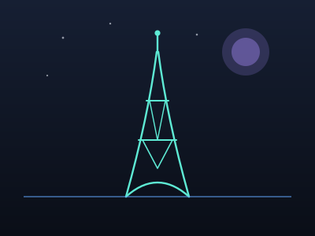
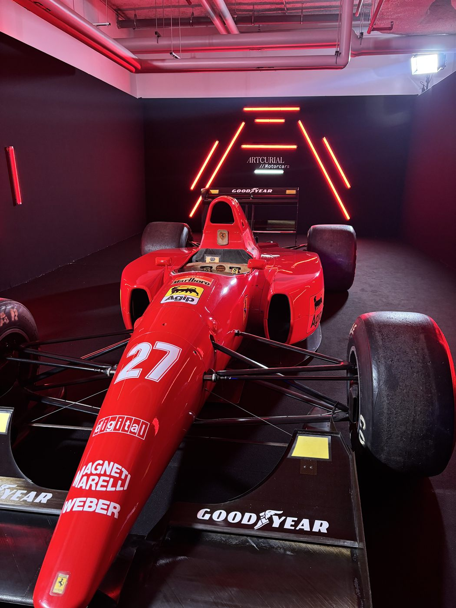

Longstaff–Schwartz American Options Pricer
Priced American options with least-squares Monte Carlo, regressing continuation values to recover the optimal early-exercise boundary.
// Trading · Structuring · Quant Research
Open to full-time quant roles from November 2026

I'm the kind of person who needs to understand how something works all the way down, whether that's a derivative pricing model, a football team's pressing scheme, or why a Grand Slam final turns on one point. That obsession with detail is what pulled me toward quantitative finance: I hold an MSc in Quantitative Finance (Master 272, Financial and Economic Engineering) from Université Paris Dauphine-PSL, and I currently work as a Quantitative Strategist with the Strategic Asset Allocation team of Generali France's Investment Division.
I'm equally comfortable in a spreadsheet and in a conversation, methodical and a little stubborn about getting things right, but also curious enough to keep pulling on unrelated threads (football tactics, F1 strategy, a good playlist) just to see where they lead. Professionally, I care less about how clever a method looks and more about the real value it creates.
I was born and raised in Tunis, Tunisia, where I did all my schooling before university and graduated with a Tunisian High School Degree in Mathematics with highest honours, part of the “Covid Baccalaureate” cohort that sat its exams in July under 40°C heat. Moving from Tunis to Lyon and then to Paris on my own taught me to adapt fast and bet on myself, which is probably why I'm still comfortable weighing a few different paths instead of picking the safest option.
Leaving a protective family home at eighteen, the only comfort zone I had known for that long, to build a life on my own is probably the single biggest thing that shaped me. It made me independent and dependable, and it taught me not to flinch at the size of a problem. Whether it takes an hour, a few days or a few weeks, I know I will solve it, and I do it with a steady calm rather than stress. That is what people notice first: I stay relaxed under pressure, and when something is handed to me, it gets done.
I pay attention to the small things, the details most people skip, because they shape the impression you leave and tell you a lot about others. I care as much about how something is done as about whether it gets done.
Humility, no matter what you achieve, respect and kindness are the values I hold onto the most. Empathy and care matter to me: you should help people and bring them up with you rather than climb alone. Your colleagues, your friends and your family are just as important as you are, and they deserve to be cared for.
Career progression over time, each role a step up in scope, from equity research to quantitative strategy.
 Generali France, Paris
Generali France, Paris
Replicated the GSRAI stress index from Bloomberg credit-spread, rates, equity-volatility and FX data; built and backtested a portable-alpha framework across eight liquid diversifiers; and developed an LLM-powered research pipeline for portfolio-monitoring dashboards.
 BNP Paribas CIB, Paris
BNP Paribas CIB, Paris
Priced cross-asset structured products — Autocalls, CLNs, Sharkfins, Steepeners — coordinating with Trading and Structuring on tailored investment and hedging solutions.
 Crédit Agricole
CIB, Paris
Crédit Agricole
CIB, Paris
Built a Python historical-simulation framework to model stressed liquidity gaps and tail risk, and automated sensitivity / stress-scenario analyses on LCR, NSFR and ALMM indicators in VBA.
 BIAT CIB, Tunis
BIAT CIB, Tunis
Built a commodity-option pricing engine combining Black–Scholes and Schwartz–Smith models, and implemented a calibrated Kalman filter in Python to estimate latent commodity-price factors.
 ODDO BHF
ODDO BHF
Rotated across three coverage teams — Automobile, Oil & Gas and Small Caps. Researched key ratios and figures from quarterly reports, took notes on strategic decisions during earnings calls and roadshows, produced daily news digests ahead of morning calls, and valued companies using NAV, DCF and trading comparables.
 Université Paris
Dauphine-PSL
Université Paris
Dauphine-PSL
Financial and Economic Engineering track: stochastic calculus, asset pricing, portfolio optimisation and machine learning for finance.
Between the two years of the Master's
Spent on the BIAT CIB, Crédit Agricole CIB and BNP Paribas CIB internships listed under Professional Experience.
Université Paris
Dauphine-PSL
Université Paris
Dauphine-PSL
 Université Lyon 2
Université Lyon 2
Two years of undergraduate economics in Lyon, France, before moving to Paris to complete my bachelor's at Dauphine.
BNP Paribas, Bosquet
& Gambetta agencies
Part-time alongside the first year of my Master's at Dauphine.
 McDonald's,
Tassin-la-Demi-Lune, Lyon
McDonald's,
Tassin-la-Demi-Lune, Lyon
Part-time student job alongside my bachelor's studies in Lyon.
Developed a four-state Hidden Markov Model to support dynamic strategic asset allocation and quantify regime-dependent opportunity costs.
Priced American options with least-squares Monte Carlo, regressing continuation values to recover the optimal early-exercise boundary.
Backtesting framework and volatility strategies on FX options, built in Python.
Backtesting framework for systematic strategies, pulling market data through the Bloomberg API.
Replicated Eroglu et al. (2023), applying MODWT sym22 denoising before cointegration-based pair selection on S&P 500 constituents; the backtested strategy returned ~10% annualized versus −1.8% unfiltered.
Systematic trading strategies on the S&P GSCI Excess Return commodity index.
Replicated Bibinger et al. (2025), estimating component-wise Hurst exponents and forecasting realized volatility across DJIA constituents with mfBm, achieving lower out-of-sample RMSFE than HAR benchmarks.
Pricer for multi-asset, cross-asset structured products across several payoff types.
Classified underlying assets from tick-by-tick order-flow data through microstructure feature engineering and irregular time-series modeling, achieving 56% out-of-sample accuracy.
Replication of L. Brandt et al. (2021), “What Drives Euro Area Financial Market Developments?”
Replication of J. Teiletche and E. Bouye (2025), with an added HMM extension for regime detection.
Combined random-forest return signals with the Black–Litterman model to build a macro-driven asset allocation.
Algo-trading strategies backtesting game, built in C#.
Option-pricing engine for commodity derivatives, calibrated to market quotes across several payoff structures.
Studied the link between the VIX and WTI crude oil, building models to predict equity volatility from oil-price moves.
Implemented the CreditMetrics framework to estimate portfolio credit VaR from rating-migration and default probabilities.
Bootstrapped the yield curve to price corporate bonds and compute spreads, duration and convexity.
Dauphine's crypto & blockchain student club
Member of the communication team, helping promote the club's events and content around crypto and blockchain topics.
Université Paris Dauphine-PSL
Contributed to the Master 272 club's newsletter for fellow students.
What keeps me going once the markets close.

Nerazzurro since the Mourinho treble era (2009–2010). Friends call me “the football encyclopedia” — transfers, squads, tactics, I know the details most people skip.

Long-time Ferrari fan, following every race weekend from qualifying to strategy calls.
Grand fan of Nadal's game and career — the fight on every point is what drew me in.
Spent much of middle and high school in Geralt's, Yharnam's and Gotham's shadows — The Witcher 3, Bloodborne and Batman: Arkham Knight are still my all-time favourites.
Pop, house, melodic house and jazz on rotation, with an 80s soul — current favourites are Fred again.. and The Blaze, alongside classics like Gilbert Montagné, Boney M, Fairuz, Jacques Brel, Dire Straits and ABBA. I also love classical music, especially Debussy and Vivaldi. I like to mix sets myself — and cook while I'm at it.

A solo walk or bike ride, bowling with friends, a movie at the cinema, coffee at a good coffeeshop, wine and quality food around a football match or a round of FC26 / Mario Kart, 5-a-side football with friends or the occasional game of American pool, rooftops and hotel bars, a nice dinner out, or a club to catch a good DJ or artist.
Always happy to talk quant finance, markets, or a good idea. Whether it's a role, a project, or just a chat, feel free to reach out.